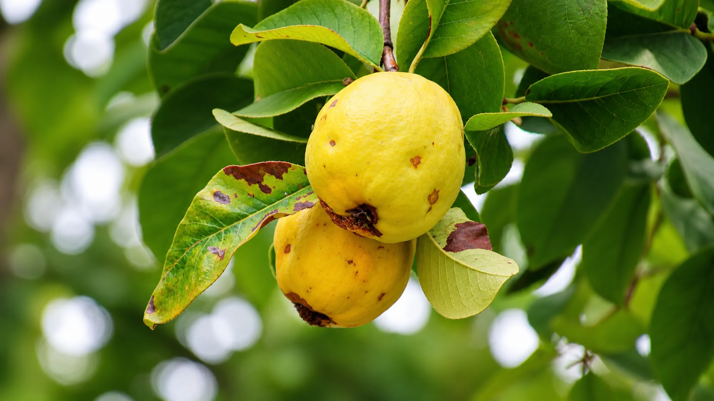

Laberinto
Explora la selva, recolecta especies y evita los obstáculos.
Explora la selva a tu ritmo: recorre el laberinto o descubre las parejas del memorama.
Explora la selva, recolecta especies y evita los obstáculos.

Encuentra las parejas de frutas y flores de la selva.
Recolecta los 6 frutos dispersados y las 4 flores polinizadas de la guía.
Evita hamburguesas, pizzas, refrescos, farolas, botas, celulares y monedas.
Usa las Flechas / WASD en teclado o los botones táctiles en pantalla.